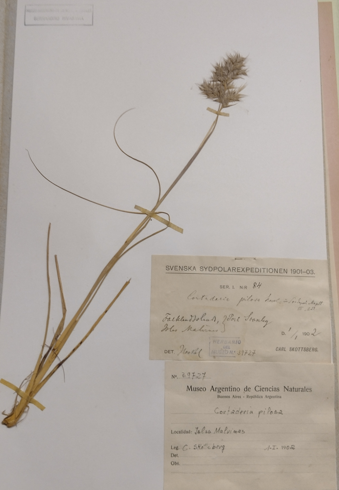

En Agosto del 2024 pude realizar varias acciones gracias a Sensorialis, un ciclo de conciertos AV que proponen entrelazar la curiosidad científica con la curiosidad artística. En ese marco la edición en la que participé se llamó Diásporas Nativas, y se realizó conjuntamente con el Museo de Ciencias Naturales Bernardino Rivadavia. Como parte de la propuesta conocimos las diversas colecciones botánicas de ese museo, y pudimos charlar directamente con los grupos de investigación que las estudian, conservan y hacen crecer. Luego realizamos un concierto AV en el Centro Cultural de España en Buenos Aires, en CABA, Argentina.
En la visita, además de entrar en contacto con diversos equipos de cientifiques y conocer su labor, buscamos hacer dialogar algo de esas colecciones y esa visita con nuestras líneas de producción/investigación artísticas, para que estuviera presente de alguna forma en el concierto.
De esa experiencia muchas cosas quedaron resonando en mí - entre ellas la colección de paleobotánica con plantas y frutos fosilizados de hace millones de años y de distintos lugares de la Argentina, y la colección botánica de las Islas Malvinas con especímenes recolectados a principios de siglo XX.
Pensaba en lo lejano que puede ser o estar o sentirse lo nuestro (lo que compartimos y nos hace).
Entre lo cercano y cercano hay relaciones de contigüidad. Tienen lo suyo, pero me parecen más interesantes las interacciones a distancia. Una pispeada de cómo poder captarlas son, por ejemplo, lo que cambió el panorama de la Inteligencia Artificial generativa allá en el 2019 con el mecanismo de Atención.
Luego de la visita pensaba en las relaciones entre lo cercano y lo lejano, y el rol de estas colecciones, la ciencia y el arte respecto a eso. Las relaciones entre las partes y el todo, y en hacer obra cerrada/"completa" y otra abiertamente parcial.
El livecoding de por sí puede ser vivido como una experiencia de lectura/escritura muy abierta, y es lo que más busco.
> El livecoding es la práctica de improvisación de código en vivo, en donde se muestra el texto del código a medida de que se construye. Yo hago livecoding visual sobre todo, por lo que muestro el código que sintetiza imagen y transforma videos.
Desde que empecé a livecodear investigo su potencial para exigir procesamiento por parte de las personas que participan. Esto implica darles momentos con más pistas: código simple que si se lee e interpreta como texto de lenguaje natural puede relacionarse directamente con las imágenes que generan.... Todo esto para luego aumentar el ritmo y complejidad de los cambios y de la propuesta.
Así transcurro una performance de livecoding, leyendolé las caras a las personas a ver qué tipo de intereses demuestran. Si hay personas a las que les interesa develar el mecanismo, el juego es más interesante, y es exigente para mí también - porque me exige a buscar el código más simple que haga la transformación visual que quiero, me obliga a poner buenos nombres de funciones y variables, y a mantener un entorno limpio sin código muerto. De esa forma pienso la performance como el armado de circuitos.
Parte de esta búsqueda es la construcción continua de mi parte de instrumentos algorítmicos que le agreguen capas a ese proceso.
Me interesa tejer discursos pero yendo un poco más allá, tejer nuevos lenguajes para decir e incluso armar el compilador yo. Me parece un honor acercarse a poder sugerir relaciones entre las partes y el todo, lo pequeño y lo grande, lo del día a día y lo que es construido como histórico. Para eso hice Cóndor Loop.
Cóndor Loop
Existen relaciones que me interesan tejer.
Por ej: Laura Richardson hablando sobre litio, petróleo y agua dulce de Argentina. Hay una relación directa entre ese discurso del 2023, y que les argentines solo podamos tocar y conocer las plantas de Malvinas visitando las colecciones botánicas de museos.
Me interesaba poder plantear un sistema-instrumento que ponga a estas relaciones en primer plano, y que además se preste a juegos visuales-conceptuales de ocultamiento/develamiento rítmicos.
Para esto activé registros fotográficos que tomé de la visita guiada a las diversas colecciones botánicas que son campo de investigación en el Museo Argentino de Ciencias Naturales Bernardino Rivadavia, y que constituyen un pequeño dataset. Además utilicé el Nodo de Cómputo de San Francisco, Córdoba, para poder hacer todo el procesamiento necesario para el sistema.
Esta es la metodología que armé - algunas partes están automatizadas, otras son más manuales. Utilicé python para todo.
Lo veamos paso por paso.
Pensemos el proceso para una foto, ya que después esto se repite equivalentemente para todas las fotos que saqué en el Museo.
Sea una foto,
Por ejemplo:

Esta foto es fragmentada en 24 recortes aleatorios. En este proceso se guardan las posiciones originales de estos recortes.
Cada recorte es pasado por un modelo que toma una imágen y devuelve un video utilizando Inteligencia Artificial. Por atrás este modelo está buscando darle moción a la imagen de una manera probabilística. Por cada imagen hay 24 videos que realizar, correspondientes a los 24 retazos o recortes realizados antes. Para que haya una idea de tiempos de cómputo, un video de 5 segundos y de resolución 512x512 píxeles le toma al Nodo de Cómputo ~2 minutos en realizar. O sea que animar 24 videos (el equivalente en mi sistema a una “imagen”) toma casi 50 minutos (si sale todo bien). En resumen, un "video" completo (o sea, hecho de 24 videos-retazos-hojas) que dura 5 segundos toma una hora en sintetizar. Esta parte del proceso fue increiblemente lenta ya que implicó idas y vueltas hasta encontrar parámetros del proceso que me gusten, e, incluso con acceso a cómputo científico, tuve que automatizar partes de la interacción con el modelo de manera programática - que no fue sencillo ya que este tipo de uso no está documentado online.
Ejemplo de un video-recorte pasado por IA - lo que sería una hojita del racimo:
Cada video-recorte está asociado a la imagen original y tiene guardado las posiciones a las que corresponden.
La loopera Cóndor tiene un secuenciador de conjuntos de videos: Toma un directorio de video-recortes y sabe ejecutar los 24 videos en simultaneo, que al posicionarlos en las coordenadas originales vuelven a armar fragmentariamente la imagen original (o una parte, dependiendo de cómo se hizo el recorte)
En Cóndor, un “video” está formado por videos. La gran mayoría de los recortes de por sí tienen poca información. Para entender lo que ha sido representado originalmente hay que ver los 24 videos en simultáneo.
Cóndor me permite elegir si mostrar de a un video-retazo por vez, de a un par o todos a la vez, completando el video-racimo. Además me permite mezclar video-retazos que pertenecen a distintos video-racimos. También puedo configurar cada cuánto cambiar al próximo conjunto de videos, para controlar más finamente la sensación rítmica.
Looperas generativas
Pensaba en racimos de videos, porque pensaba en relaciones semánticas entre videos y lo que viene siendo una obsesión con modalidad fuego corona hace años: una loopera semántica. Debo haber implementado al menos 10 looperas completas en diversos lenguajes a lo largo de estos últimos tres años. Hice ya varias en python, varias en javascript, algunas en c++, un par en rust. Todas son software libre y se pueden encontrar en mi github.
Sabemos que un video es una secuencia de imágenes. Si un video es un racimo de "imágenes" conectados semánticamente, entonces el concepto que los une es una vaina. Puede ser que entre varios videos haya conexiones semánticas también, como sería un tema respecto a un concepto, en cuyo caso tendríamos un tallo de una planta. Si yo pudiera extraer ese “tema” o “concepto” que los conecta, luego podría operar directamente entre conceptos para formar oraciones, párrafos, textos - en un sentido abstracto - y rearmar la planta entera, generativamente, al conectar las transformaciones conceptuales con la variable tiempo. Complejizar incluso la variable tiempo y pensar en los tiempos de las plantas, o los tiempos circulares de la naturaleza. Incluso, si pudiera medir la fortaleza de las relaciones semánticas - o los "grados de separación" podría pensar en modelar distintas morfologías - qué sería un árbol versus un arbusto, una flor versus una inflorescencia?
Por ahora todo esto es un sueño. Mi loopera soñada.
En una performance con una loopera -la que tenga- lo estoy haciendo, pero el procesamiento lo hago yo en mi hardware biológico. Todavía no automaticé esta parte ya que es un desafío técnico bastante duro.
Me gusta porque es relacionar video<->texto<->imagen y subir un nivel de abstracción que permite narración en una performance visual, pero además permite el armado de metalenguajes y meta(*)lenguajes (en un runway process).
Este tema también lo exploré en árbol - un instrumento basado en Procesamiento de Lenguaje Natural para hacer performance visual junto a la banda Marmotas Dreams, y que fue estrenado en el Centro de Arte Sonoro (CASo).
Como yo pienso lo que hago cuando performo visuales como montaje en vivo, siempre busco tener formas de operar semánticamente - aunque las relaciones semánticas hayan sido codificadas con reglas todavía, o hayan sido pre-calculadas - en este caso armé previamente secuencias de video-racimos que, en mi opinión, al sucederse uno atrás del otro construyen una imagen mental más amplia que aquella que une puede tener si viera solamente un fragmento.
Esta acción se corresponde con mi meta-proyecto ¿Qué sueña la Argentina?. Dentro de este proyecto está Lenguaje Frontera, que ganó el apoyo a la producción del cceba el año pasado y será exhibido este en el recoleta. Además está la performance que hice a principios de este año en Underclub llamado Plan Condor AV. Está también Trabajo, que ganó el primer premio del Premio Itaú categoría Arte e IA.


 Existen relaciones que me interesan tejer.
Existen relaciones que me interesan tejer.


 En Cóndor, un “video” está formado por videos. La gran mayoría de los recortes de por sí tienen poca información. Para entender lo que ha sido representado originalmente hay que ver los 24 videos en simultáneo.
En Cóndor, un “video” está formado por videos. La gran mayoría de los recortes de por sí tienen poca información. Para entender lo que ha sido representado originalmente hay que ver los 24 videos en simultáneo.